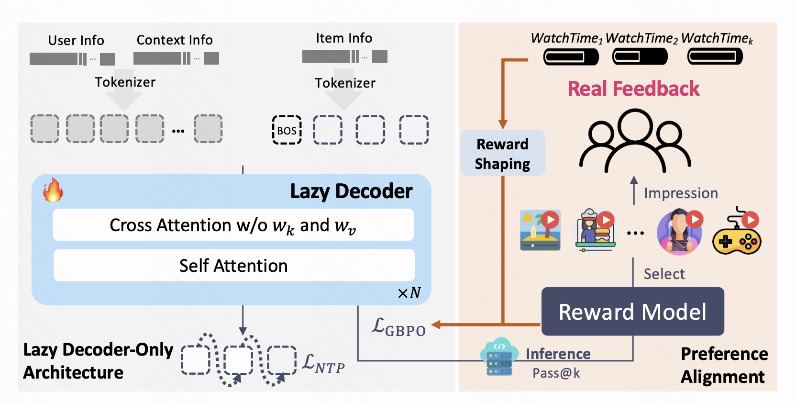
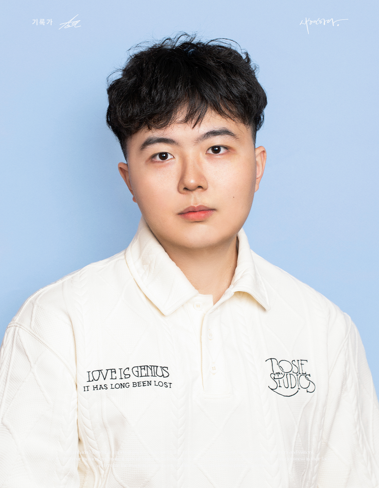
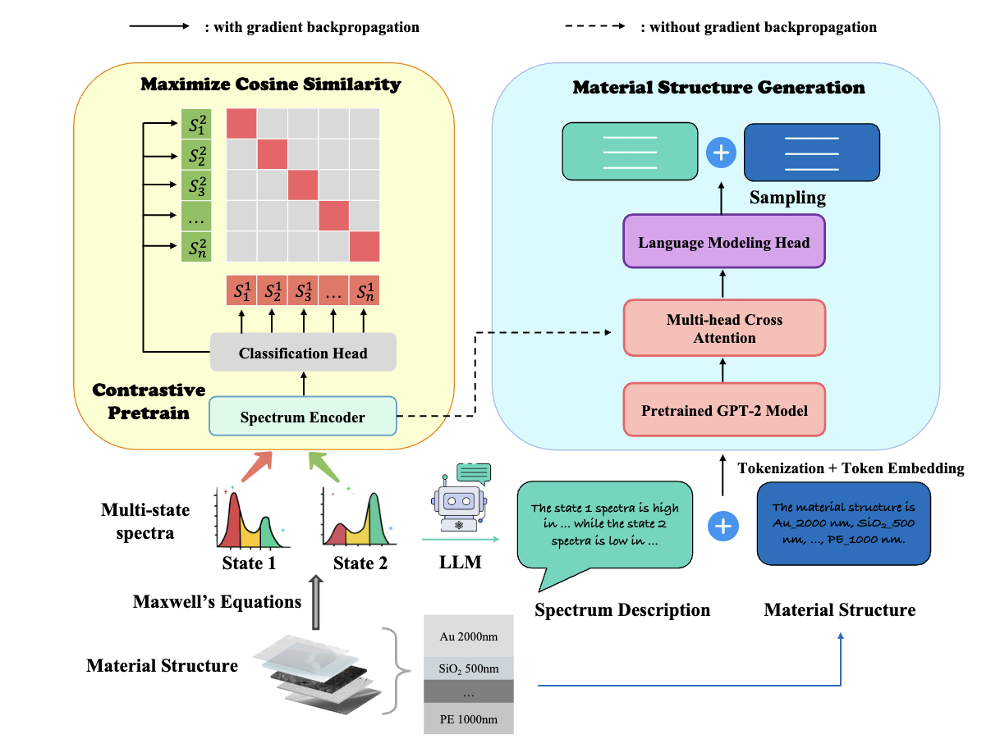

OneRec-V2 Technical Report
A decoder-only architecture for generative recommendation that uses feedback from live services to model user preferences.
Researcher at Tencent
杨舒杰
I work on large language models, generative recommendation, and reinforcement learning for agents. At Tencent’s WeChat Channels team, I focus on live-stream recommendation.


A decoder-only architecture for generative recommendation that uses feedback from live services to model user preferences.

Uses a contrastively pretrained language model to design metamaterials that operate across multiple configurations.
Evaluates whether language models can infer fine-grained interests from long histories of user behavior.
An end-to-end generative recommender and a study of how its performance scales with training compute.
* Indicates equal contribution.
Cauchyformer and CoSP were published online in ACS Omega and Advanced Science, respectively.
Joined Tencent’s WeChat Channels team to work on live-stream recommendation.
The ALPBench preprint on long-term preference modeling appeared on arXiv.
Released the OneRec-V2 Technical Report.
Released the OneRec Technical Report and joined Kuaishou’s Recommendation LLM Group as a research intern.
Joined Xiaohongshu’s AIGC Group as a research intern.
AHEAD received the Best Paper Award at CIAC 2023.
Mar 2026 – Present
Researcher, Tencent Qingyun Program. Language models and agents for live-stream recommendation.
Jun 2025 – Mar 2026
Research intern. Worked on reinforcement learning from human feedback for OneRec. Mentored by Qigen Hu.
Nov 2024 – Mar 2025
Research intern. Worked on text-to-image generation with Stable Diffusion and FLUX. Mentored by Shuang Sun.
Aug 2023 – Jun 2026
M.S. in Data Science and Information Technology, Tsinghua-Berkeley Shenzhen Institute. Advised by Kaichen Dong and Yansong Tang.
Aug 2019 – Jul 2023
B.E. in Information and Computational Science, School of Mathematics and Statistics. Advised by Minnan Luo.
Feb – May 2023
Visiting student in the VIP Group. Worked on industrial image anomaly detection with Jinbao Wang.
Outside work, I enjoy running and playing badminton.